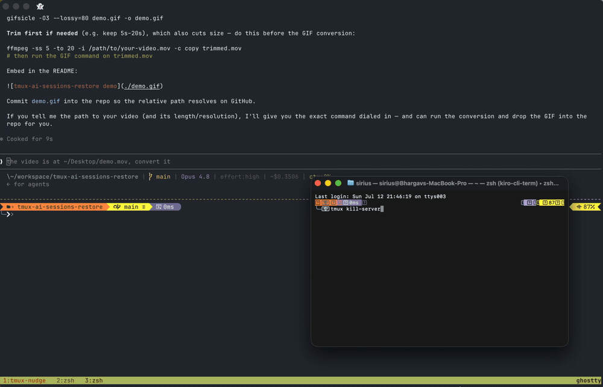

tmux-resurrect and tmux-continuum bring back your sessions, windows and panes. But an AI CLI running in a pane comes back cold — a brand-new, empty conversation. This plugin is the missing layer: it makes claude and kiro-cli chat relaunch resumed, in the same pane, where you left off.

01
Each tool's own first-prompt hook (Claude UserPromptSubmit, Kiro userPromptSubmit) runs inside the pane, so it knows $TMUX_PANE. It stamps the live session id onto that pane as tmux pane-options — ephemeral, gone when the pane closes.
02
A @resurrect-hook-post-save-all hook reads those markers and rewrites the matching pane's command in resurrect's own save file to claude --resume <id> — the only thing persisted to disk. It only rewrites a pane that is actually running the tool right now, detected via the pane's process subtree.
03
resurrect replays that command unchanged, in the pane's saved cwd. The AI pane reopens already inside your prior conversation — even with many AI panes in the same directory, since the id is stamped per-pane.
Required
tmux-resurrect — owns the save file this plugin rewrites, and replays the resume command on restore. tmux ≥ 3.0, jq, and claude and/or kiro-cli on your PATH.
Recommended
tmux-continuum, for the automatic reboot→restore experience. Without it you save/restore by hand with prefix + Ctrl-s / prefix + Ctrl-r.
Order matters: load this after tmux-resurrect but before tmux-continuum — it must set @resurrect-processes before continuum starts its auto-restore.
set -g @continuum-restore 'on' set -g @plugin 'tmux-plugins/tmux-resurrect' set -g @plugin 'bmohan01/tmux-ai-sessions-restore' set -g @plugin 'tmux-plugins/tmux-continuum' run '~/.tmux/plugins/tpm/tpm'
Then prefix + I. TPM installs the plugin and registers the Claude/Kiro hooks automatically. Non-TPM users can run scripts/install_hooks.sh by hand.